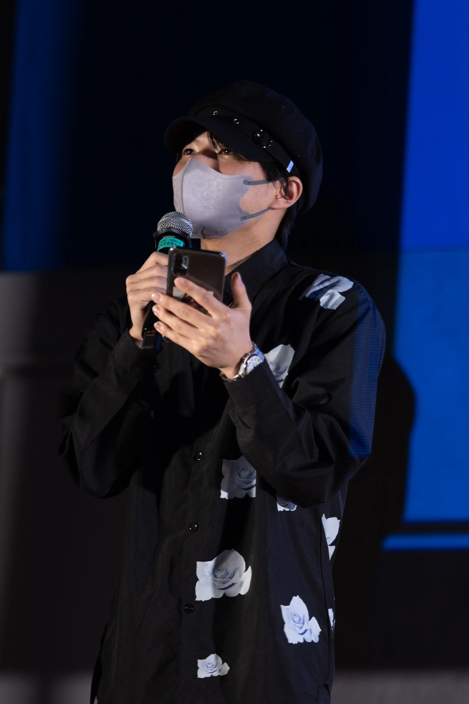
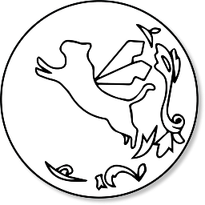

学生自治会執行役員
学生自治会では、学生と学校の橋渡役として日々学生からの意見書をた大学の学生生活課と協議を繰り返して実行へと持って行けるようにしています。過去にはフリーマーケットや大学施設の整備を率先して連絡し、改善を行いました。
出身：東京都
大学：東京造形大学
デザイン学科メディアデザイン専攻


学生自治会では、学生と学校の橋渡役として日々学生からの意見書をた大学の学生生活課と協議を繰り返して実行へと持って行けるようにしています。過去にはフリーマーケットや大学施設の整備を率先して連絡し、改善を行いました。
CS祭は本学の芸祭に位置する祭儀行事です。そのCS祭で、私は全体総括としてCS祭実行委員長を務めさせていただきました。スケジュール管理やタスク整理等や女子美術大学相模原キャンパスの実行委員会様との合同企画も実行しました。
オープンキャンパス（以下OC）では東京造形大学の魅力を造形大の学生自らがアピールすることを目的にして、全て学生が制作しています。例年OCでの私の担当はWebサイトを務めています。